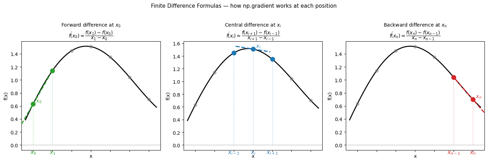
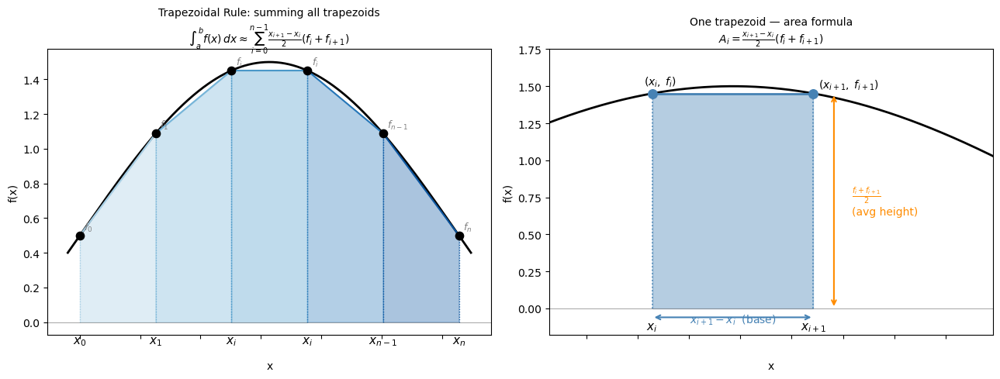
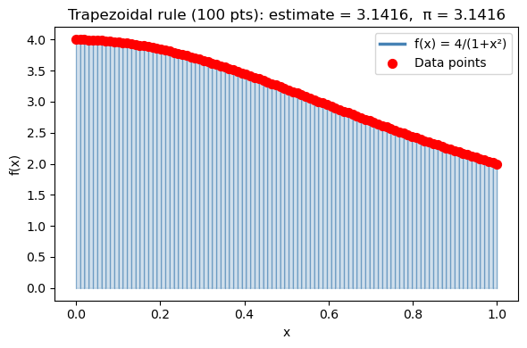
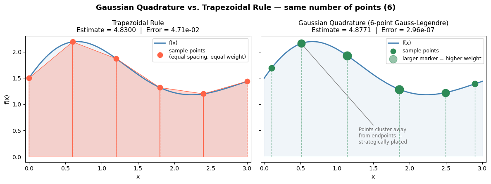
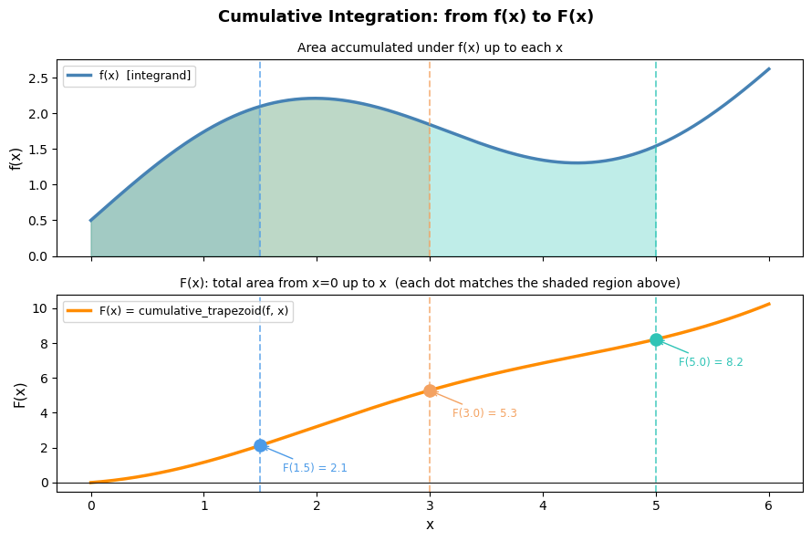
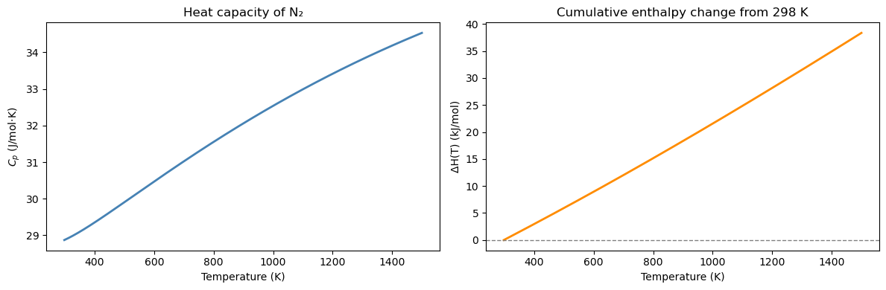
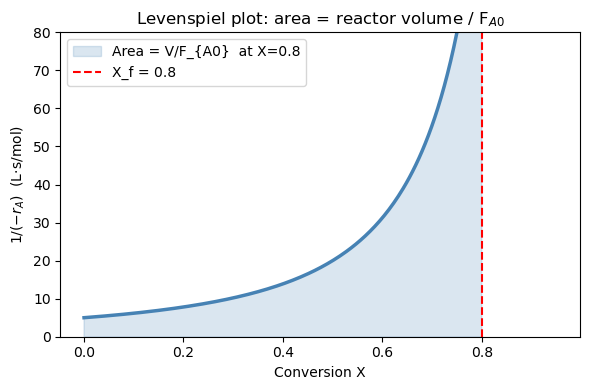
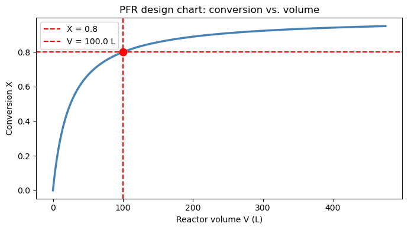

Chapter 15: Numerical Integration and Differentiation#
Topics Covered:
Numerical differentiation with
np.gradientTrapezoidal rule:
scipy.integrate.trapezoidGeneral-purpose quadrature:
scipy.integrate.quadCumulative integration:
scipy.integrate.cumulative_trapezoidChE application: PFR design and the Levenspiel integral
Motivation: Two Problems You Can’t Solve by Hand#
Problem 1 — How much heat does it take?
The heat capacity of nitrogen gas is not constant — it varies with temperature. To heat 1 mol of N₂ from 300 K to 1200 K, you need:
where \(C_p(T)\) follows the NIST Shomate equation. You could try to integrate this polynomial by hand, but what if your \(C_p\) data comes from a table of measurements rather than a formula?
Problem 2 — What is the reaction rate at each time step?
In a batch reactor experiment, you measure concentration \(C_A\) at discrete time points. The reaction rate is: $\(r_A = -\frac{dC_A}{dt}\)$
But you don’t have a formula for \(C_A(t)\) — only a table of numbers. How do you compute a derivative from data?
Both problems need numerical methods. Let’s look at the tools Python gives us.
import numpy as np
import matplotlib.pyplot as plt
from scipy.integrate import quad, trapezoid, cumulative_trapezoid
15.1 The Core Idea: Integration and Differentiation Geometrically#
Before writing any code, let’s make the geometry clear.
Integration = the area under a curve between two limits
Differentiation = the slope of a curve at a point
When you have a smooth analytic function, calculus gives exact answers. When you have discrete data or a complicated expression, you use numerical approximations instead.
x = np.linspace(0, 4, 300)
f = x * np.exp(-x)
fig, axes = plt.subplots(1, 2, figsize=(11, 4))
# Left: integration = area under curve
ax = axes[0]
ax.plot(x, f, 'steelblue', linewidth=2.5)
mask = (x >= 0.5) & (x <= 3.0)
ax.fill_between(x[mask], f[mask], alpha=0.3, color='steelblue', label=r'Area = $\int_{0.5}^{3} f(x)\,dx$')
ax.set_xlabel('x'); ax.set_ylabel('f(x)')
ax.set_title('Integration = area under the curve')
ax.legend(fontsize=10)
# Right: differentiation = slope at a point
ax = axes[1]
ax.plot(x, f, 'steelblue', linewidth=2.5)
x0 = 1.0
f0 = x0 * np.exp(-x0)
dfdx0 = np.exp(-x0) - x0 * np.exp(-x0) # exact derivative: e^{-x}(1-x)
x_tan = np.linspace(0.2, 1.8, 50)
ax.plot(x_tan, f0 + dfdx0 * (x_tan - x0), 'r--', linewidth=2, label=f"Tangent at x=1\nslope = {dfdx0:.3f}")
ax.scatter([x0], [f0], color='red', s=60, zorder=5)
ax.set_xlabel('x'); ax.set_ylabel('f(x)')
ax.set_title('Differentiation = slope at a point')
ax.legend(fontsize=10)
plt.suptitle(r'$f(x) = x\,e^{-x}$', fontsize=13)
plt.tight_layout()
plt.show()

15.2 Numerical Differentiation: np.gradient#
The mathematics: finite difference formulas#
A derivative is defined by the limit: $\(f'(x) = \lim_{\Delta x \to 0} \frac{f(x + \Delta x) - f(x)}{\Delta x}\)$
When you only have data at discrete points \(x_0, x_1, \ldots, x_n\), you can’t take the limit — but you can approximate it using nearby values. These approximations are called finite difference formulas.
Central difference (used at interior points — most accurate): $\(f'(x_i) \approx \frac{f(x_{i+1}) - f(x_{i-1})}{x_{i+1} - x_{i-1}}\)$
This is second-order accurate: the error shrinks like \((\Delta x)^2\). It uses symmetric information on both sides of \(x_i\).
Forward difference (used at the left endpoint, where no left neighbor exists): $\(f'(x_0) \approx \frac{f(x_1) - f(x_0)}{x_1 - x_0}\)$
Backward difference (used at the right endpoint, where no right neighbor exists): $\(f'(x_n) \approx \frac{f(x_n) - f(x_{n-1})}{x_n - x_{n-1}}\)$
The forward and backward formulas are only first-order accurate — the error shrinks like \(\Delta x\), not \((\Delta x)^2\). This is why numerical derivatives are slightly less accurate at the endpoints.
np.gradient applies these three formulas automatically and returns one derivative value per data point — the output array is the same length as the input.
Key Python syntax#
dydx = np.gradient(y, x)
y— array of function values (what you measured)x— array of corresponding \(x\) positions; always pass this when your \(x\)-spacing is not 1Returns — array of the same length as
y, one \(dy/dx\) value per point
Warning
If you write np.gradient(y) without x, NumPy assumes unit spacing (\(\Delta x = 1\)). The result is wrong whenever your data has physical units like seconds or Kelvin.
# Visualize: Forward, Backward, and Central Difference formulas
# on a small discrete dataset, labeling x_0, x_1, x_{i-1}, x_i, x_{i+1}, x_{n-1}, x_n
# Use a smooth function sampled at a handful of points
x_pts = np.linspace(0.5, 3.5, 7) # x_0 … x_n (n=6)
f_pts = np.sin(x_pts) + 0.3 * x_pts # arbitrary smooth function
x_fine = np.linspace(0.3, 3.7, 300)
f_fine = np.sin(x_fine) + 0.3 * x_fine
# Pick a representative interior index i = 3
i = 3
# ---------- slope line helpers ----------
def tangent_segment(x0, y0, slope, half_width=0.35):
xs = np.array([x0 - half_width, x0 + half_width])
ys = y0 + slope * (xs - x0)
return xs, ys
# Forward difference at x_0
fwd_slope = (f_pts[1] - f_pts[0]) / (x_pts[1] - x_pts[0])
# Backward difference at x_n
bwd_slope = (f_pts[-1] - f_pts[-2]) / (x_pts[-1] - x_pts[-2])
# Central difference at x_i
cen_slope = (f_pts[i+1] - f_pts[i-1]) / (x_pts[i+1] - x_pts[i-1])
fig, axes = plt.subplots(1, 3, figsize=(14, 4.5), sharey=False)
titles = [
r'Forward difference at $x_0$' + '\n'
r'$f\'(x_0)\approx\dfrac{f(x_1)-f(x_0)}{x_1-x_0}$',
r'Central difference at $x_i$' + '\n'
r'$f\'(x_i)\approx\dfrac{f(x_{i+1})-f(x_{i-1})}{x_{i+1}-x_{i-1}}$',
r'Backward difference at $x_n$' + '\n'
r'$f\'(x_n)\approx\dfrac{f(x_n)-f(x_{n-1})}{x_n-x_{n-1}}$',
]
configs = [
# (focus_idx, left_idx, right_idx, slope, color)
(0, None, 1, fwd_slope, 'tab:green'),
(i, i-1, i+1, cen_slope, 'tab:blue'),
(-1, -2, None, bwd_slope, 'tab:red'),
]
# label map: index -> LaTeX label
def get_label(idx, n=6):
mapping = {0: r'$x_0$', 1: r'$x_1$', n-1: r'$x_{n-1}$', n: r'$x_n$'}
return mapping.get(idx, None)
for ax, title, (fi, li, ri, slope, color) in zip(axes, titles, configs):
ax.plot(x_fine, f_fine, 'k-', linewidth=2, zorder=1)
ax.scatter(x_pts, f_pts, color='gray', s=40, zorder=3, alpha=0.5)
focus_x = x_pts[fi]
focus_y = f_pts[fi]
# highlight the points used in the formula
used_idx = [idx for idx in [li, fi, ri] if idx is not None]
ax.scatter(x_pts[used_idx], f_pts[used_idx], color=color, s=80, zorder=5)
# draw the secant / slope line
xs_t, ys_t = tangent_segment(focus_x, focus_y, slope, half_width=0.45)
ax.plot(xs_t, ys_t, color=color, linewidth=2.2, linestyle='--', label='approx slope', zorder=4)
# vertical dashed lines to x-axis for used points
for idx in used_idx:
ax.plot([x_pts[idx], x_pts[idx]], [0, f_pts[idx]],
color=color, linewidth=0.9, linestyle=':', alpha=0.6)
# annotate x-axis tick labels
n = len(x_pts) - 1 # n = 6
label_map = {0: r'$x_0$', 1: r'$x_1$',
i-1: r'$x_{i-1}$', i: r'$x_i$', i+1: r'$x_{i+1}$',
n-1: r'$x_{n-1}$', n: r'$x_n$'}
for idx in used_idx:
raw = idx if idx >= 0 else n + 1 + idx # convert negative index
lbl = label_map.get(raw, None)
if lbl:
ax.annotate(lbl, xy=(x_pts[idx], 0),
xytext=(0, -18), textcoords='offset points',
ha='center', fontsize=11, color=color)
# annotate the focus point on the curve
raw_fi = fi if fi >= 0 else n + 1 + fi
focus_lbl = label_map.get(raw_fi, r'$x_i$')
ax.annotate(f' {focus_lbl}', xy=(focus_x, focus_y),
fontsize=10, color=color, va='bottom')
ax.set_title(title, fontsize=10, pad=8)
ax.set_xlabel('x')
ax.set_ylabel('f(x)')
ax.set_xlim(0.2, 3.8)
ax.axhline(0, color='gray', linewidth=0.5)
ax.tick_params(labelbottom=False) # hide numeric ticks; we use latex labels
plt.suptitle('Finite Difference Formulas — how np.gradient works at each position',
fontsize=11, y=1.02)
plt.tight_layout()
plt.savefig('finite_difference_formulas.png', dpi=300, bbox_inches='tight')
plt.show()

Syntax Practice: np.gradient#
Before verifying on a known function, try the syntax yourself on a simple dataset.
Given position data sampled every 0.5 seconds:
\(t\) (s) |
0.0 |
0.5 |
1.0 |
1.5 |
2.0 |
|---|---|---|---|---|---|
\(x\) (m) |
0.0 |
1.2 |
2.1 |
2.7 |
3.0 |
Task: Compute the velocity \(v = dx/dt\) at each time point using np.gradient.
t = np.array([0.0, 0.5, 1.0, 1.5, 2.0])
x = np.array([0.0, 1.2, 2.1, 2.7, 3.0])
# Your turn: compute v = dx/dt at every point
v = np.gradient(???, ???)
print("t (s):", t)
print("v (m/s):", v)
Notice:
v[0]uses the forward formula (\(x_0, x_1\))v[1],v[2],v[3]use the central formulav[-1]uses the backward formula (\(x_{n-1}, x_n\))
t = np.array([0.0, 0.5, 1.0, 1.5, 2.0])
x = np.array([0.0, 1.2, 2.1, 2.7, 3.0])
# Compute v = dx/dt at every point ; x(t)
v = np.gradient(x, t)
print("t (s):", t)
print("v (m/s):", np.round(v, 4))
# Which formula was used at each point?
print("\nFormula used:")
print(f" v[0] = (x[1]-x[0])/(t[1]-t[0]) = {(x[1]-x[0])/(t[1]-t[0]):.4f} ← forward") # one neighbor
print(f" v[2] = (x[3]-x[1])/(t[3]-t[1]) = {(x[3]-x[1])/(t[3]-t[1]):.4f} ← centeral") # two neighbors
print(f" v[-1] = (x[-1]-x[-2])/(t[-1]-t[-2]) = {(x[-1]-x[-2])/(t[-1]-t[-2]):.4f} ← backward") # one neighbor
t (s): [0. 0.5 1. 1.5 2. ]
v (m/s): [2.4 2.1 1.5 0.9 0.6]
Formula used:
v[0] = (x[1]-x[0])/(t[1]-t[0]) = 2.4000 ← forward
v[2] = (x[3]-x[1])/(t[3]-t[1]) = 1.5000 ← centeral
v[-1] = (x[-1]-x[-2])/(t[-1]-t[-2]) = 0.6000 ← backward
15.2.1 Verification on a known function#
Let’s check np.gradient against the exact derivative of \(\sin(x)\) (which is \(\cos(x)\)).
For a uniform grid with spacing \(h\), the central difference error is proportional to \(h^2 f'''(x)/6\). With 50 points over \([0, 2\pi]\), \(h \approx 0.13\), so we expect the max error to be on the order of \(h^2 \approx 0.017\) — consistent with what we observe below.
x_sin = np.linspace(0, 2 * np.pi, 50)
y_sin = np.sin(x_sin)
# Numerical derivative
dy_num = np.gradient(y_sin, x_sin)
# Exact derivative
dy_exact = np.cos(x_sin)
#print(np.abs(dy_num - dy_exact))
max_error = np.max(np.abs(dy_num - dy_exact))
print(f"Max absolute error vs exact cos(x): {max_error:.2e}")
fig, axes = plt.subplots(1, 2, figsize=(11, 4))
ax = axes[0]
ax.plot(x_sin, y_sin, 'steelblue', linewidth=2, label='sin(x)')
ax.set_xlabel('x'); ax.set_ylabel('y')
ax.set_title('Original function: sin(x)')
ax.legend()
ax = axes[1]
ax.plot(x_sin, dy_exact, 'k-', linewidth=2.5, label='Exact: cos(x)')
ax.plot(x_sin, dy_num, 'r--', linewidth=1.5, label='np.gradient (50 pts)')
ax.set_xlabel('x'); ax.set_ylabel("f '(x)")
ax.set_title('Derivative: numerical vs exact')
ax.legend()
plt.tight_layout()
plt.show()
Max absolute error vs exact cos(x): 2.74e-03

15.2.2 Reaction rate from concentration data#
In a batch reactor experiment, \(C_A\) is measured at discrete time points. The reaction rate of disappearance of A is defined as: $\(r_A = -\frac{dC_A}{dt}\)$
The negative sign converts the decrease in concentration into a positive rate. We only have a table of numbers — no formula for \(C_A(t)\) — so np.gradient is the right tool.
Notice how np.gradient applies the central difference at interior points and the one-sided (forward/backward) difference at the two endpoints \(t=0\) and \(t=60\). You can verify this in the printed table: the values at the boundaries use only one neighbor.
t = np.array([0, 10, 20, 30, 40, 50, 60 ]) # s
C_A = np.array([1.00, 0.78, 0.61, 0.48, 0.37, 0.29, 0.23]) # mol/L
# Reaction rate: r_A = -dC_A/dt
# IMPORTANT: pass t as the second argument — spacing is 10 s, not 1
r_A = - np.gradient(C_A, t)
print(f"{'t (s)':>6} {'C_A (mol/L)':>12} {'r_A (mol/L·s)':>14}")
print("-" * 38)
for i in range(len(t)):
print(f" {t[i]:>4.0f} {C_A[i]:>12.3f} {r_A[i]:>14.5f}")
fig, axes = plt.subplots(1, 2, figsize=(11, 4))
ax = axes[0]
ax.plot(t, C_A, 'o-', color='steelblue', linewidth=2, markersize=7)
ax.set_xlabel('Time (s)'); ax.set_ylabel('$C_A$ (mol/L)')
ax.set_title('Concentration vs. time')
ax = axes[1]
ax.plot(t, r_A, 's-', color='darkorange', linewidth=2, markersize=7)
ax.set_xlabel('Time (s)'); ax.set_ylabel('$r_A$ (mol/L·s)')
ax.set_title('Reaction rate vs. time')
plt.tight_layout()
plt.show()
t (s) C_A (mol/L) r_A (mol/L·s)
--------------------------------------
0 1.000 0.02200
10 0.780 0.01950
20 0.610 0.01500
30 0.480 0.01200
40 0.370 0.00950
50 0.290 0.00700
60 0.230 0.00600

15.3 Numerical Integration of Discrete Data: Trapezoidal Rule#
The mathematics: deriving the formula#
The trapezoidal rule approximates the area under a curve by connecting adjacent data points with straight lines and summing the resulting trapezoid areas.
For two adjacent points \((x_i, f_i)\) and \((x_{i+1}, f_{i+1})\), the area of the trapezoid is: $\(A_i = (x_{i+1} - x_i)\bigl(\frac{f_i + f_{i+1}}{2}\bigr)\)$
This is just the base times the average height. Summing over all \(n-1\) intervals: $\(\int_a^b f(x)\,dx \approx \sum_{i=0}^{n-2} (x_{i+1} - x_i)\bigl(\frac{f_i + f_{i+1}}{2}\bigr)\)$
For a uniform grid with spacing \(h = (b-a)/(n-1)\), this simplifies to: $\(\int_a^b f(x)\,dx \approx h\left[\frac{f_0}{2} + f_1 + f_2 + \cdots + f_{n-2} + \frac{f_{n-1}}{2}\right]\)$
The endpoints are weighted by \(\frac{1}{2}\) because each endpoint belongs to only one trapezoid, while interior points are shared between two.
Truncation error: The trapezoidal rule is second-order accurate — for a uniform grid, the global error is: $\(\text{Error} \approx -\frac{(b-a)^2}{12n^2}\,\bigl[f'(b) - f'(a)\bigr] \sim \mathcal{O}(h^2)\)$
Doubling the number of points reduces the error by a factor of 4.
Key Python syntax#
from scipy.integrate import trapezoid
area = trapezoid(y, x)
y— array of function values at the sample pointsx— array of corresponding \(x\) positions; always pass this with physical unitsReturns — a single float: \(\int y\, dx\)
Warning
trapezoid(y) without x assumes unit spacing (\(\Delta x = 1\)) — wrong whenever your \(x\)-axis has units.
# Visualize the trapezoidal rule formula on a general dataset
# Shows: area = (x_{i+1} - x_i) / 2 * (f_i + f_{i+1}) for each trapezoid
x_trap_vis = np.linspace(0, np.pi, 6) # x_0 … x_n (n=5, 6 points)
f_trap_vis = np.sin(x_trap_vis) + 0.5 # arbitrary positive function
x_fine_vis = np.linspace(-0.1, np.pi + 0.1, 400)
f_fine_vis = np.sin(x_fine_vis) + 0.5
n = len(x_trap_vis) - 1 # number of intervals
fig, axes = plt.subplots(1, 2, figsize=(13, 5))
# ── Left panel: full trapezoidal sum with labeled points ──────────────────────
ax = axes[0]
ax.plot(x_fine_vis, f_fine_vis, 'k-', linewidth=2, zorder=2, label='f(x)')
colors = plt.cm.Blues(np.linspace(0.35, 0.85, n))
for i in range(n):
xi, fi = x_trap_vis[i], f_trap_vis[i]
xi1, fi1 = x_trap_vis[i+1], f_trap_vis[i+1]
ax.fill_between([xi, xi1], [fi, fi1], alpha=0.35, color=colors[i], zorder=1)
ax.plot([xi, xi1], [fi, fi1], color=colors[i], linewidth=1.5)
ax.plot([xi, xi], [0, fi], color=colors[i], linewidth=0.9, linestyle=':')
ax.plot([xi1, xi1], [0, fi1], color=colors[i], linewidth=0.9, linestyle=':')
ax.scatter(x_trap_vis, f_trap_vis, color='black', s=55, zorder=5)
x_labels = {0: r'$x_0$', 1: r'$x_1$', n-1: r'$x_{n-1}$', n: r'$x_n$'}
f_labels = {0: r'$f_0$', 1: r'$f_1$', n-1: r'$f_{n-1}$', n: r'$f_n$'}
for j, (xv, fv) in enumerate(zip(x_trap_vis, f_trap_vis)):
ax.annotate(x_labels.get(j, r'$x_i$'), xy=(xv, 0), xytext=(0, -20),
textcoords='offset points', ha='center', fontsize=11)
ax.annotate(f_labels.get(j, r'$f_i$'), xy=(xv, fv), xytext=(4, 5),
textcoords='offset points', fontsize=9, color='gray')
ax.axhline(0, color='gray', linewidth=0.5)
ax.tick_params(labelbottom=False)
ax.set_xlabel('x', labelpad=20)
ax.set_ylabel('f(x)')
ax.set_title(
'Trapezoidal Rule: summing all trapezoids\n'
r'$\int_a^b f(x)\,dx \approx \sum_{i=0}^{n-1}'
r'\frac{x_{i+1}-x_i}{2}(f_i + f_{i+1})$',
fontsize=10
)
# ── Right panel: zoom into ONE trapezoid, labeling the formula pieces ─────────
ax2 = axes[1]
ax2.plot(x_fine_vis, f_fine_vis, 'k-', linewidth=2, zorder=2)
i_show = 2
xi, fi = x_trap_vis[i_show], f_trap_vis[i_show]
xi1, fi1 = x_trap_vis[i_show+1], f_trap_vis[i_show+1]
ax2.fill_between([xi, xi1], [fi, fi1], alpha=0.4, color='steelblue', zorder=1)
ax2.plot([xi, xi1], [fi, fi1], 'steelblue', linewidth=2)
ax2.plot([xi, xi], [0, fi], 'steelblue', linewidth=1.2, linestyle=':')
ax2.plot([xi1, xi1], [0, fi1], 'steelblue', linewidth=1.2, linestyle=':')
ax2.scatter([xi, xi1], [fi, fi1], color='steelblue', s=70, zorder=5)
# double-headed arrow for base width
mid_x = (xi + xi1) / 2
ax2.annotate('', xy=(xi1, -0.06), xytext=(xi, -0.06),
arrowprops=dict(arrowstyle='<->', color='steelblue', lw=1.5))
ax2.text(mid_x, -0.10, r'$x_{i+1} - x_i$ (base)', ha='center',
fontsize=10, color='steelblue')
# average height label
avg_h = (fi + fi1) / 2
ax2.annotate('', xy=(xi1 + 0.08, avg_h), xytext=(xi1 + 0.08, 0),
arrowprops=dict(arrowstyle='<->', color='darkorange', lw=1.5))
ax2.text(xi1 + 0.15, avg_h / 2,
r'$\frac{f_i + f_{i+1}}{2}$' + '\n(avg height)',
ha='left', va='center', fontsize=10, color='darkorange')
ax2.annotate(r'$(x_i,\; f_i)$', xy=(xi, fi), xytext=(-8, 8), textcoords='offset points', fontsize=10)
ax2.annotate(r'$(x_{i+1},\; f_{i+1})$', xy=(xi1, fi1), xytext=(5, 5), textcoords='offset points', fontsize=10)
ax2.annotate(r'$x_i$', xy=(xi, 0), xytext=(0, -20), textcoords='offset points', ha='center', fontsize=11)
ax2.annotate(r'$x_{i+1}$', xy=(xi1, 0), xytext=(0, -20), textcoords='offset points', ha='center', fontsize=11)
ax2.axhline(0, color='gray', linewidth=0.5)
ax2.tick_params(labelbottom=False)
ax2.set_xlabel('x', labelpad=20)
ax2.set_ylabel('f(x)')
ax2.set_title(
'One trapezoid — area formula\n'
r'$A_i = \frac{x_{i+1}-x_i}{2}(f_i + f_{i+1})$',
fontsize=10
)
ax2.set_xlim(xi - 0.4, xi1 + 0.7)
ax2.set_ylim(-0.18, max(fi, fi1) + 0.3)
plt.tight_layout()
plt.show()

15.3.1 Building intuition: visualizing trapezoids#
Let’s integrate \(f(x) = \dfrac{4}{1+x^2}\) from 0 to 1 using only 5 points so the trapezoids are clearly visible.
The exact answer is \(\pi\) — you can verify this using the substitution \(x = \tan\theta\): $\(\int_0^1 \frac{4}{1+x^2}\,dx = 4\arctan(x)\Big|_0^1 = 4\left(\frac{\pi}{4} - 0\right) = \pi\)$
With only 5 points (\(h = 0.25\)), we expect an error of roughly \(\mathcal{O}(h^2) = \mathcal{O}(0.0625)\). Observe how the straight-line segments cut corners off the curved function — that gap is the truncation error.
def f_pi(x):
return 4.0 / (1 + x**2)
# N-point trapezoidal approximation
N = 100
x_trap = np.linspace(0, 1, N)
y_trap = f_pi(x_trap)
# print(x_trap, y_trap)
area_trap = trapezoid(y_trap, x_trap)
print(f"{N}-point trapezoidal estimate: {area_trap:.6f}")
print(f"True value (π): {np.pi:.6f}")
print(f"Error: {abs(area_trap - np.pi):.6f}")
# # Visualize
x_fine = np.linspace(0, 1, 300)
fig, ax = plt.subplots(figsize=(6, 4))
ax.plot(x_fine, f_pi(x_fine), 'steelblue', linewidth=2.5, label='f(x) = 4/(1+x²)', zorder=3)
for i in range(len(x_trap) - 1):
ax.fill_between([x_trap[i], x_trap[i+1]],
[y_trap[i], y_trap[i+1]], alpha=0.25, color='steelblue')
ax.plot([x_trap[i], x_trap[i]], [0, y_trap[i]], 'steelblue', linewidth=0.8, alpha=0.5)
ax.plot([x_trap[-1], x_trap[-1]], [0, y_trap[-1]], 'steelblue', linewidth=0.8, alpha=0.5)
ax.scatter(x_trap, y_trap, color='red', s=50, zorder=5, label='Data points')
ax.set_xlabel('x'); ax.set_ylabel('f(x)')
ax.set_title(f'Trapezoidal rule ({N} pts): estimate = {area_trap:.4f}, π = {np.pi:.4f}')
ax.legend()
plt.tight_layout()
plt.show()
100-point trapezoidal estimate: 3.141576
True value (π): 3.141593
Error: 0.000017

15.3.2 Heat required from tabulated \(C_p\) data#
A steam process requires heating from 400 K to 1000 K. Given tabulated heat capacity data: $\(\Delta H = \int_{400}^{1000} C_p(T) \, dT\)$
from scipy.integrate import trapezoid
# Tabulated Cp data for steam (J/mol·K) — 7 measurement points
T_data = np.array([400, 500, 600, 700, 800, 900, 1000]) # K
Cp_data = np.array([34.3, 35.2, 36.3, 37.5, 38.6, 39.7, 40.8]) # J/mol·K
delta_H = trapezoid(Cp_data, T_data) # J/mol
print(f"ΔH = ∫Cp dT = {delta_H:.1f} J/mol = {delta_H/1000:.3f} kJ/mol")
fig, ax = plt.subplots(figsize=(6, 4))
ax.plot(T_data, Cp_data, 'o-', color='darkorange', linewidth=2, markersize=8)
ax.fill_between(T_data, Cp_data, alpha=0.2, color='darkorange',
label=f'ΔH = {delta_H/1000:.2f} kJ/mol')
ax.set_xlabel('Temperature (K)')
ax.set_ylabel('$C_p$ (J/mol·K)')
ax.set_title('Heat capacity of steam')
ax.legend(fontsize=11)
plt.tight_layout()
plt.show()
ΔH = ∫Cp dT = 22485.0 J/mol = 22.485 kJ/mol

Note
Always pass x as the second argument: trapezoid(y, x). If you write trapezoid(y) alone, it assumes unit spacing (\(\Delta x = 1\)) and gives a wrong answer when your x-axis has physical units like seconds or Kelvin.
15.4 Integration of a Python Function: scipy.integrate.quad#
The mathematics: adaptive quadrature#
When you have a Python function (not just data), quad can do far better than the trapezoidal rule. Instead of using equally spaced points, it uses adaptive quadrature: it automatically places more sample points in regions where the function changes rapidly and fewer where it is smooth.
Under the hood, quad uses Gaussian quadrature on subintervals. A \(k\)-point Gaussian quadrature rule integrates polynomials of degree up to \(2k-1\) exactly, by choosing optimal sample locations \(x_1, \ldots, x_k\) and weights \(w_1, \ldots, w_k\):
$\(\int_a^b f(x)\,dx \approx \sum_{j=1}^k w_j\, f(x_j)\)$
The positions \(x_j\) are the roots of Legendre polynomials — not equally spaced, but strategically placed. quad pairs this with an error estimator: if the error is too large on a subinterval, it splits the subinterval in half and tries again. This continues until the estimated error falls below a tolerance (\(\sim 10^{-8}\) by default).
The result is near machine precision accuracy (~14 significant digits) with far fewer function evaluations than a fine trapezoidal grid would require.
Key Python syntax#
from scipy.integrate import quad
result, error = quad(f, a, b)
f— a callable (function or lambda) taking a single float and returning a floata,b— lower and upper limits of integration (can benp.inffor infinite limits)Returns — a tuple of two values:
result— the integral estimateerror— an upper bound on the absolute error
Warning
quad always returns two values. Always unpack both:
result, error = quad(f, a, b) # correct
result = quad(f, a, b) # wrong — result is now the whole tuple (float, float)
# Visualizing Gaussian Quadrature vs. Trapezoidal Rule
# Key idea: Gaussian quadrature picks a few *strategic* sample points
# (with associated weights) that can exactly integrate high-degree polynomials,
# while the trapezoid rule uses equally spaced points with uniform weights.
import numpy as np
import matplotlib.pyplot as plt
import matplotlib.patches as mpatches
# A smooth but non-trivial function to integrate on [0, 3]
def f(x):
return np.exp(-0.5 * x) * np.sin(2 * x) + 1.5
a, b = 0.0, 3.0
x_fine = np.linspace(a, b, 300)
# --- Trapezoidal rule: 6 equally spaced points ---
n_trap = 6
x_trap = np.linspace(a, b, n_trap)
y_trap = f(x_trap)
# --- Gaussian quadrature: 6 points (Gauss-Legendre on [a, b]) ---
# np.polynomial.legendre.leggauss returns nodes/weights on [-1, 1]
# We transform to [a, b] via: x = (b-a)/2 * xi + (a+b)/2
xi_gl, w_gl = np.polynomial.legendre.leggauss(6)
x_gauss = (b - a) / 2 * xi_gl + (a + b) / 2
w_gauss = (b - a) / 2 * w_gl # scaled weights
y_gauss = f(x_gauss)
gauss_integral = np.sum(w_gauss * y_gauss)
# Exact integral for reference
from scipy.integrate import quad as scipy_quad
exact, _ = scipy_quad(f, a, b)
# ---------------------------------------------------------------
fig, axes = plt.subplots(1, 2, figsize=(12, 4.5), sharey=True)
fig.suptitle("Gaussian Quadrature vs. Trapezoidal Rule — same number of points (6)",
fontsize=13, fontweight='bold')
# --- Left panel: Trapezoidal ---
ax = axes[0]
ax.fill_between(x_fine, f(x_fine), alpha=0.08, color='steelblue')
ax.plot(x_fine, f(x_fine), 'steelblue', lw=2, label='f(x)')
# Draw trapezoids
for i in range(n_trap - 1):
xs = [x_trap[i], x_trap[i], x_trap[i+1], x_trap[i+1]]
ys = [0, y_trap[i], y_trap[i+1], 0 ]
ax.fill(xs, ys, alpha=0.25, color='tomato')
ax.plot(xs, ys, color='tomato', lw=0.8)
# Mark sample points — all equally weighted (same size)
ax.scatter(x_trap, y_trap, s=80, color='tomato', zorder=5,
label='sample points\n(equal spacing, equal weight)')
ax.vlines(x_trap, 0, y_trap, colors='tomato', lw=1, linestyles='dashed', alpha=0.5)
trap_val = np.trapz(y_trap, x_trap)
ax.set_title(f'Trapezoidal Rule\nEstimate = {trap_val:.4f} | Error = {abs(trap_val-exact):.2e}',
fontsize=11)
ax.set_xlabel('x'); ax.set_ylabel('f(x)')
ax.set_xlim(a - 0.05, b + 0.05); ax.set_ylim(-0.1)
ax.axhline(0, color='black', lw=0.7)
ax.legend(fontsize=9)
# --- Right panel: Gaussian Quadrature ---
ax = axes[1]
ax.fill_between(x_fine, f(x_fine), alpha=0.08, color='steelblue')
ax.plot(x_fine, f(x_fine), 'steelblue', lw=2, label='f(x)')
# Marker size proportional to weight (so students see the weight idea)
w_norm = w_gauss / w_gauss.max() # normalize for display
for xi, yi, wi in zip(x_gauss, y_gauss, w_norm):
ax.vlines(xi, 0, yi, colors='seagreen', lw=1, linestyles='dashed', alpha=0.5)
ax.scatter(xi, yi, s=40 + 180 * wi, color='seagreen', zorder=5)
# Legend proxy with explanation
ax.scatter([], [], s=80, color='seagreen', label='sample points')
ax.scatter([], [], s=180, color='seagreen', alpha=0.5,
label='larger marker = higher weight')
ax.set_title(
f'Gaussian Quadrature (6-point Gauss-Legendre)\n'
f'Estimate = {gauss_integral:.4f} | Error = {abs(gauss_integral-exact):.2e}',
fontsize=11)
ax.set_xlabel('x')
ax.set_xlim(a - 0.05, b + 0.05)
ax.axhline(0, color='black', lw=0.7)
ax.legend(fontsize=9)
# Annotate the key insight
axes[1].annotate(
'Points cluster away\nfrom endpoints —\nstrategically placed',
xy=(x_gauss[1], y_gauss[1]), xytext=(1.3, 0.25),
arrowprops=dict(arrowstyle='->', color='gray'),
fontsize=8.5, color='dimgray')
plt.tight_layout()
plt.show()
print(f'Exact integral: {exact:.6f}')
print(f'Trapezoidal (6 pts): {trap_val:.6f} error = {abs(trap_val-exact):.2e}')
print(f'Gaussian quadrature (6 pts): {gauss_integral:.6f} error = {abs(gauss_integral-exact):.2e}')

Exact integral: 4.877103
Trapezoidal (6 pts): 4.830028 error = 4.71e-02
Gaussian quadrature (6 pts): 4.877103 error = 2.96e-07
15.4.1 Basic usage#
Let’s verify quad on \(\int_0^3 x^2\,dx\), whose exact answer we can compute analytically:
$\(\int_0^3 x^2\,dx = \left[\frac{x^3}{3}\right]_0^3 = \frac{27}{3} = 9\)$
Notice that quad achieves essentially machine-precision accuracy (error \(\sim 10^{-13}\)) — far better than what the trapezoidal rule would give with a moderate number of points.
from scipy.integrate import quad
# Integrate f(x) = x^2 from 0 to 3 (exact answer = 9)
def f_sq(x):
return x**2
result, error = quad(f_sq, 0, 3)
print(f"∫₀³ x² dx = {result:.10f}")
print(f"Exact answer: 9.0000000000")
print(f"Error estimate: {error:.2e}")
∫₀³ x² dx = 9.0000000000
Exact answer: 9.0000000000
Error estimate: 9.99e-14
15.4.2 The motivation problem solved: \(\Delta H\) for N₂#
The NIST Shomate equation gives \(C_p\) as a polynomial in a reduced temperature \(t = T/1000\):
The enthalpy change from \(T_1\) to \(T_2\) is then: $\(\Delta H = \int_{T_1}^{T_2} C_p(T)\,dT\)$
This is a perfectly well-defined analytic function, so quad can evaluate it to near machine precision. We compare it against trapezoid with 10 and 100 points to see how accuracy scales with grid resolution — consistent with the \(\mathcal{O}(h^2)\) error of the trapezoidal rule.
from scipy.integrate import trapezoid
# NIST Shomate coefficients for N2 (298-6000 K range)
A, B, C, D, E = 26.09200, 8.218801, -1.976141, 0.159274, 0.044434
def Cp_N2(T):
t = T / 1000.0
return A + B*t + C*t**2 + D*t**3 + E/t**2 # J/mol·K
T_low, T_high = 300.0, 1200.0
# --- Method 1: quad (high accuracy) ---
dH_quad, err = quad(Cp_N2, T_low, T_high)
# print(dH_quad, err)
# --- Method 2: trapezoid with only 10 points ---
T_10 = np.linspace(T_low, T_high, 10)
dH_trap10 = trapezoid(Cp_N2(T_10), T_10)
# print(dH_trap10)
# --- Method 3: trapezoid with 100 points ---
T_100 = np.linspace(T_low, T_high, 100)
dH_trap100 = trapezoid(Cp_N2(T_100), T_100)
# print(dH_trap100)
print(f"ΔH from 300 K to 1200 K:")
print(f" quad : {dH_quad:.4f} J/mol (error bound: {err:.2e})")
print(f" trapezoid 10 : {dH_trap10:.4f} J/mol (error vs quad: {abs(dH_trap10-dH_quad):.4f})")
print(f" trapezoid 100 : {dH_trap100:.4f} J/mol (error vs quad: {abs(dH_trap100-dH_quad):.6f})")
# Plot Cp(T)
T_plot = np.linspace(T_low, T_high, 300)
fig, ax = plt.subplots(figsize=(7, 4))
ax.plot(T_plot, Cp_N2(T_plot), 'steelblue', linewidth=2.5)
ax.fill_between(T_plot, Cp_N2(T_plot), alpha=0.15, color='steelblue',
label=f'ΔH = {dH_quad/1000:.2f} kJ/mol')
ax.set_xlabel('Temperature (K)')
ax.set_ylabel('$C_p$ (J/mol·K)')
ax.set_title('Heat capacity of N₂ (NIST Shomate equation)')
ax.legend(fontsize=11)
plt.tight_layout()
plt.show()
ΔH from 300 K to 1200 K:
quad : 28103.3488 J/mol (error bound: 7.51e-08)
trapezoid 10 : 28103.5655 J/mol (error vs quad: 0.2167)
trapezoid 100 : 28103.3511 J/mol (error vs quad: 0.002255)

15.5 Cumulative Integration: cumulative_trapezoid#
The mathematics: a running integral#
trapezoid collapses the entire integral down to a single number. But sometimes you need the integral as a function — not just the total area, but the area accumulated up to every point.
Define the cumulative integral starting from \(x_0\): $\(F(x_i) = \int_{x_0}^{x_i} f(x)\,dx\)$
Applying the trapezoidal rule interval by interval: $\(F(x_0) = 0\)\( \)\(F(x_1) = F(x_0) + \frac{x_1 - x_0}{2}(f_0 + f_1)\)\( \)\(F(x_2) = F(x_1) + \frac{x_2 - x_1}{2}(f_1 + f_2)\)\( \)\(\vdots\)\( \)\(F(x_i) = F(x_{i-1}) + \frac{x_i - x_{i-1}}{2}(f_{i-1} + f_i)\)$
This is simply accumulating trapezoid areas one step at a time. The final element \(F(x_n)\) equals what trapezoid(y, x) returns.
Key Python syntax#
from scipy.integrate import cumulative_trapezoid
F = cumulative_trapezoid(y, x, initial=0)
y— array of function valuesx— array of \(x\) positions (always pass with physical units)initial=0— sets \(F(x_0) = 0\), so the output has the same length asyReturns — array of cumulative integral values, same length as
y
Note
Without initial=0, the output has length len(y) - 1 (one fewer element, since the first trapezoid needs two points). Using initial=0 is almost always what you want because it keeps the array length consistent with your x and y arrays.
# Visualizing cumulative integration: f(x) vs. F(x)
# The top panel shows f(x) — the rate/density.
# The bottom panel shows F(x) — the running total of area accumulated from x=0.
# Shaded regions in the top panel correspond directly to the rise in the bottom panel.
import numpy as np
import matplotlib.pyplot as plt
from scipy.integrate import cumulative_trapezoid
x = np.linspace(0, 6, 300)
f = np.sin(x) + 0.4 * x + 0.5 # a smooth, non-trivial positive-ish function
F = cumulative_trapezoid(f, x, initial=0)
# Pick three x-positions to highlight accumulated area
highlight = [1.5, 3.0, 5.0]
colors = ['#4C9BE8', '#F4A261', '#2EC4B6']
fig, (ax_top, ax_bot) = plt.subplots(2, 1, figsize=(9, 6), sharex=True)
fig.suptitle('Cumulative Integration: from f(x) to F(x)', fontsize=13, fontweight='bold')
# ---- Top panel: f(x) with growing shaded areas ----
ax_top.plot(x, f, 'steelblue', lw=2.5, label='f(x) [integrand]')
ax_top.axhline(0, color='black', lw=0.7)
for xh, col in zip(highlight, colors):
mask = x <= xh
ax_top.fill_between(x[mask], f[mask], alpha=0.30, color=col)
# Mark the vertical boundary
ax_top.axvline(xh, color=col, lw=1.4, linestyle='--', alpha=0.7)
ax_top.set_ylabel('f(x)', fontsize=11)
ax_top.set_title('Area accumulated under f(x) up to each x', fontsize=10)
ax_top.legend(fontsize=9, loc='upper left')
ax_top.set_ylim(bottom=0)
# ---- Bottom panel: F(x) = cumulative integral ----
ax_bot.plot(x, F, color='darkorange', lw=2.5, label='F(x) = cumulative_trapezoid(f, x)')
ax_bot.axhline(0, color='black', lw=0.7)
for xh, col in zip(highlight, colors):
idx = np.argmin(np.abs(x - xh))
ax_bot.scatter(xh, F[idx], s=90, color=col, zorder=5)
ax_bot.axvline(xh, color=col, lw=1.4, linestyle='--', alpha=0.7)
ax_bot.annotate(f'F({xh}) = {F[idx]:.1f}',
xy=(xh, F[idx]),
xytext=(xh + 0.2, F[idx] - 1.5),
fontsize=8.5, color=col,
arrowprops=dict(arrowstyle='->', color=col, lw=1))
ax_bot.set_xlabel('x', fontsize=11)
ax_bot.set_ylabel('F(x)', fontsize=11)
ax_bot.set_title('F(x): total area from x=0 up to x (each dot matches the shaded region above)',
fontsize=10)
ax_bot.legend(fontsize=9, loc='upper left')
plt.tight_layout()
plt.show()
print('Key insight: the slope of F(x) at any point equals f(x) there.')
print('Where f(x) is large (steep function), F(x) rises quickly.')
print('Where f(x) is small (flat function), F(x) barely changes.')

Key insight: the slope of F(x) at any point equals f(x) there.
Where f(x) is large (steep function), F(x) rises quickly.
Where f(x) is small (flat function), F(x) barely changes.
A, B, C, D, E = 26.09200, 8.218801, -1.976141, 0.159274, 0.044434
def Cp_N2(T):
t = T / 1000.0
return A + B*t + C*t**2 + D*t**3 + E/t**2 # J/mol·K
T_range = np.linspace(298, 1500, 500)
Cp_range = Cp_N2(T_range)
dH_cumulative = cumulative_trapezoid(Cp_range, T_range, initial=0)
fig, axes = plt.subplots(1, 2, figsize=(12, 4))
ax = axes[0]
ax.plot(T_range, Cp_range, color='steelblue', linewidth=2)
ax.set_xlabel('Temperature (K)'); ax.set_ylabel('$C_p$ (J/mol·K)')
ax.set_title('Heat capacity of N₂')
ax = axes[1]
ax.plot(T_range, dH_cumulative / 1000, color='darkorange', linewidth=2)
ax.set_xlabel('Temperature (K)')
ax.set_ylabel('ΔH(T) (kJ/mol)')
ax.set_title('Cumulative enthalpy change from 298 K')# + r'$\Delta H(T) = \int_{298}^{T} C_p\,dT\'$')
ax.axhline(0, color='gray', linestyle='--', linewidth=1)
plt.tight_layout()
plt.show()
print(f"ΔH at T=1200 K: {dH_cumulative[np.argmin(np.abs(T_range-1200))]/1000:.2f} kJ/mol")

ΔH at T=1200 K: 28.12 kJ/mol
15.6 Chemical Engineering Application: PFR Design#
The mole balance and the design equation#
A plug flow reactor (PFR) is a tubular reactor in which fluid flows steadily through the tube without mixing in the axial direction. Every fluid element sees the same residence time history.
A steady-state mole balance on species A over a differential volume element \(dV\) gives: $\(F_A(V) - F_A(V + dV) + r_A\,dV = 0 \implies \frac{dF_A}{dV} = r_A\)$
Since conversion is \(X = (F_{A0} - F_A)/F_{A0}\), we have \(F_A = F_{A0}(1-X)\) and \(dF_A = -F_{A0}\,dX\). Substituting: $\(F_{A0}\frac{dX}{dV} = -r_A\)$
Rearranging and integrating from \(X=0\) to \(X=X_f\): $\(\boxed{V = F_{A0} \int_0^{X_f} \frac{dX}{-r_A(X)}}\)$
This is the PFR design equation. The integrand \(1/(-r_A)\) is called the Levenspiel integrand. The reactor volume equals \(F_{A0}\) times the area under the Levenspiel plot.
Rate law for this problem#
For a liquid-phase second-order reaction A → products, the rate law and concentrations are: $\(-r_A = k C_A^2, \qquad C_A = C_{A0}(1-X)\)\( \)\(\implies -r_A = k C_{A0}^2 (1-X)^2\)$
Substituting into the design equation: $\(V = \frac{F_{A0}}{k C_{A0}^2} \int_0^{X_f} \frac{dX}{(1-X)^2}\)$
This integral has an analytical solution: $\(\int_0^{X_f} \frac{dX}{(1-X)^2} = \left[\frac{1}{1-X}\right]_0^{X_f} = \frac{X_f}{1-X_f}\)$
So the exact answer is: $\(V_\text{exact} = \frac{F_{A0}}{k C_{A0}^2} \cdot \frac{X_f}{1 - X_f}\)$
We’ll use this to verify the numerical result from quad.
Parameter |
Value |
|---|---|
Rate constant \(k\) |
0.05 L/mol·s |
Inlet concentration \(C_{A0}\) |
2.0 mol/L |
Molar feed rate \(F_{A0}\) |
5.0 mol/s |
Target conversion \(X_f\) |
80% |
Part A: The Levenspiel plot#
The integrand \(1/(-r_A)\) is the Levenspiel integrand — plotting it vs. conversion \(X\) is standard ChE practice for reactor design.
For our second-order rate law: $\(\frac{1}{-r_A} = \frac{1}{k C_{A0}^2 (1-X)^2}\)$
As \(X \to 1\), \((1-X)^2 \to 0\), so the integrand diverges to infinity. This tells you physically that it becomes increasingly “expensive” (in volume) to achieve the last few percent of conversion — the reaction slows down dramatically as reactant is depleted.
The reactor volume is graphically the shaded area under this curve from \(X=0\) to \(X=X_f\), scaled by \(F_{A0}\).
k = 0.05 # L/mol·s
C_A0 = 2.0 # mol/L
F_A0 = 5.0 # mol/s
X_f = 0.80 # target conversion
def rate(X):
return k * C_A0**2 * (1 - X)**2 # -r_A (mol/L·s)
def levenspiel(X):
return 1.0 / rate(X) # 1/(-r_A)
X_plot = np.linspace(0, 0.95, 300)
fig, ax = plt.subplots(figsize=(6, 4))
ax.plot(X_plot, levenspiel(X_plot), 'steelblue', linewidth=2.5)
X_shade = np.linspace(0, X_f, 300)
ax.fill_between(X_shade, levenspiel(X_shade), alpha=0.2, color='steelblue',
label=f'Area = V/F_{{A0}} at X={X_f}')
ax.axvline(X_f, color='red', linestyle='--', linewidth=1.5, label=f'X_f = {X_f}')
ax.set_xlabel('Conversion X')
ax.set_ylabel(r'$1/(-r_A)$ (L·s/mol)')
ax.set_title('Levenspiel plot: area = reactor volume / F$_{A0}$')
ax.set_ylim(0, 80)
ax.legend()
plt.tight_layout()
plt.show()

Part B: Numerical integration with quad#
We compute \(V = F_{A0}\int_0^{X_f} \frac{dX}{-r_A(X)}\) numerically and compare against the exact analytical result: $\(V_\text{exact} = \frac{F_{A0}}{k C_{A0}^2} \cdot \frac{X_f}{1-X_f} = \frac{5.0}{0.05 \times 4.0} \cdot \frac{0.8}{0.2} = 25 \cdot 4 = 100 \text{ L}\)$
A relative error of \(\sim 10^{-13}\) confirms that quad achieves machine-precision accuracy.
integral, err = quad(levenspiel, 0, X_f)
V_numerical = F_A0 * integral
# Analytical answer for 2nd-order: V = (F_A0 / k*C_A0^2) * X_f/(1-X_f)
V_exact = (F_A0 / (k * C_A0**2)) * (X_f / (1 - X_f))
print(f"PFR volume for X = {X_f:.0%} conversion:")
print(f" Numerical (quad): V = {V_numerical:.4f} L")
print(f" Analytical: V = {V_exact:.4f} L")
print(f" Relative error: {abs(V_numerical - V_exact)/V_exact:.2e}")
PFR volume for X = 80% conversion:
Numerical (quad): V = 100.0000 L
Analytical: V = 100.0000 L
Relative error: 0.00e+00
Part C: Reactor sizing chart — conversion vs. volume#
Instead of a single volume target, we can use cumulative_trapezoid on the Levenspiel integrand to build a full design chart:
$\(V(X) = F_{A0} \int_0^{X} \frac{dX'}{-r_A(X')}\)$
Each point on this curve answers the question: “What volume do I need to reach conversion \(X\)?” This is useful for comparing reactor options or evaluating sensitivity to the conversion target.
X_arr = np.linspace(0, 0.95, 500)
V_arr = F_A0 * cumulative_trapezoid(levenspiel(X_arr), X_arr, initial=0)
fig, ax = plt.subplots(figsize=(7, 4))
ax.plot(V_arr, X_arr, 'steelblue', linewidth=2.5)
ax.axhline(X_f, color='red', linestyle='--', linewidth=1.5, label=f'X = {X_f}')
ax.axvline(V_numerical, color='red', linestyle='--', linewidth=1.5, label=f'V = {V_numerical:.1f} L')
ax.scatter([V_numerical], [X_f], color='red', s=80, zorder=5)
ax.set_xlabel('Reactor volume V (L)')
ax.set_ylabel('Conversion X')
ax.set_title('PFR design chart: conversion vs. volume')
ax.legend()
plt.tight_layout()
plt.show()

Chapter 15 Summary#
Task |
Tool |
Key syntax |
|---|---|---|
Derivative of discrete data |
|
|
Integral of discrete data |
|
|
Integral of a Python function |
|
|
Running cumulative integral |
|
|
Pass parameters to |
|
|
When to use which tool#
Have discrete data? →
trapezoid(ornp.gradientfor derivatives)Have a Python function? →
quadfor highest accuracyNeed the value at every point, not just the endpoint? →
cumulative_trapezoidMore points always helps
trapezoid, butquadis already near machine precision